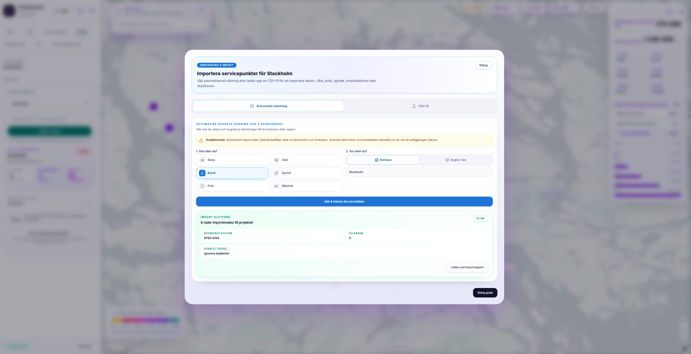

Förstå tillgänglighet i tid – inte bara i kilometer.
Analysera hur många som når vård och service inom vald restid. Jämför vad som händer när en förbindelse stängs eller en ny tillkommer. Se konsekvenserna på karta och i tydliga nyckeltal.
Från vardagsplanering till förändrade förutsättningar.
Jämför nåbarhet, störningar och nya förbindelser med samma typ av beslutsunderlag.
Räckvidd
Vad nås inom 15, 30 eller 60 minuter? Se befolkning och samhällsservice.
Kris & störning
Vad förändras när en väg eller bro stängs? Se restid och berörd befolkning.
Förstärkning
Vad förändras med en ny förbindelse? Jämför nåbarheten före och efter.
Välj plats, färdsätt och scenario. Granska resultatet på karta och ta vidare nyckeltalen till rapport.

Vad nås inom vald restid?
Se ett exempel på analys från Stockholm. Växla mellan färdiga tidsgränser och se hur många invånare och servicepunkter som nås.
Välj utgångspunkt
Utgå från en adress, servicepunkt eller plats i kartan.
Jämför färdsätt
Analysera gång, cykel, bil eller kollektivtrafik.
Se vilka som nås
Få karta och nyckeltal för befolkning och service.
Vad händer när en väg eller bro stängs?
Jämför före och efter i det färdiga Karlstadsexemplet. Se förändrad restid, förlorad nåbarhet och hur många invånare som berörs.
Markera avstängningen
Välj den vägsträcka som ska analyseras i arbetsytan.
Jämför före och efter
Se skillnaden på karta och i tydliga nyckeltal.
Vad förändras när en ny förbindelse tillkommer?
Växla mellan före och efter i det färdiga Gävleexemplet. Se var nåbarheten ökar och hur många fler invånare som nås inom vald restid.
Lägg till en ny förbindelse
Testa en ny väg, bro eller annan förbindelse i arbetsytan.
Mät tillkommen tillgänglighet
Jämför tillkommen räckvidd och befolkning före och efter.
Från plats till beslutsunderlag.
Välj plats
Utgå från karta, adress eller servicepunkt.
Lägg till data
Använd befintliga geodata eller lägg till egna servicepunkter.
Kör analys
Välj färdsätt och jämför räckvidd eller scenarier.
Exportera
Ta karta och nyckeltal vidare till rapport eller beslutsmöte.

Ta med era egna servicepunkter.
Lägg till skolor, vård och annan service via adress eller eget register. Ange kapacitet när det är relevant för analysen.
Sök eller importera
Hitta platser via adress eller importera ett CSV-register.
Ange kapacitet
Jämför tillgång till exempelvis elev- eller vårdplatser.
Nuvarande täckning
Se vilka områden som kan analyseras i dag. Välj ett område i kartan för att se namnet.
Se Restidsanalys med ett scenario från er verksamhet.
Vi visar hur ni kan jämföra restid, nåbarhet och konsekvenser på karta.